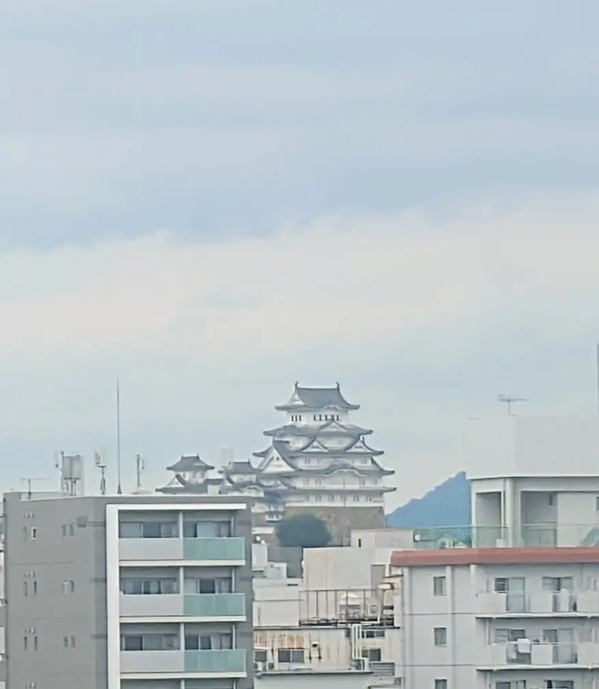
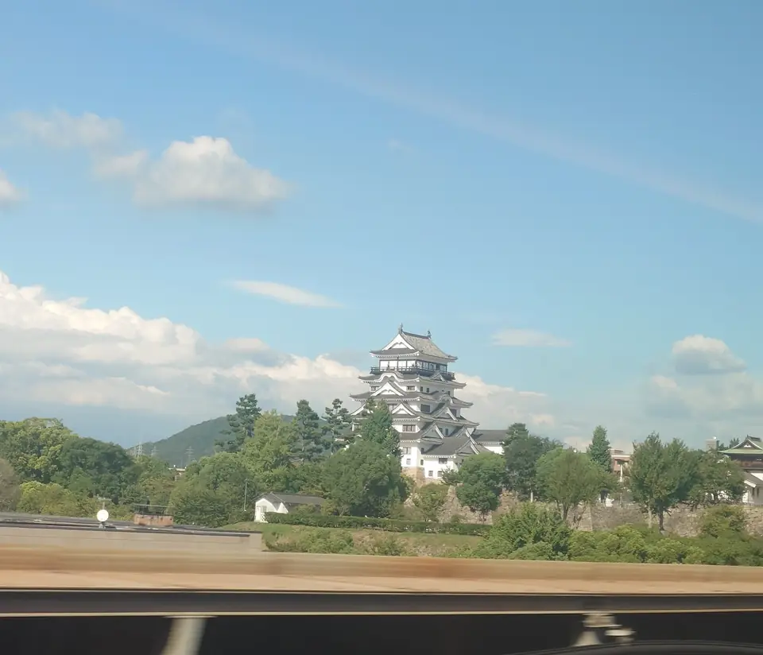

WHY THEY ARE HERE
新幹線と城は、同じ道をたどる
街道と、川と、平野。城が置かれた場所は、いま線路が通る場所でもある。
東海道新幹線に乗っていると、車窓に城が次々と現れます。沿線にこれだけ城が並んでいるのには理由があります。
城が築かれたのは、人と物が動く場所でした。街道の宿場、大きな川の渡し、平野を見渡す丘。とくに江戸と京・大坂を結ぶこの道筋は、幕府がもっとも重んじた回廊です。
明治以降の鉄道も、峠を避け、川を渡りやすい場所を選び、人の集まる城下町を結びました。城下町はそのまま駅の町になり、東海道新幹線は街道とほぼ同じ回廊を走っています。
見えている天守が当時のままとは限りません。廃城令や戦災で失われ、戦後に建て直されたものも多くあります。石垣は昔のまま残っていることが多く、天守のない城跡では、山の形と石垣が城の跡です。
見える時間は数秒から十数秒。線路のすぐ脇に立つ城もあれば、遠い山の上に点のように見える城もあります。席側を知っておくと、見逃さずにすみます。
KEEPS
天守を探す
線路沿いの天守から、山頂の小さな点まで。東京からの時間順です。


CASTLE HILLS
山からたどる城跡
建物は残っていなくても、城のあった山は車窓に残っています。


観音寺城跡
山の稜線が、城の面影
米原と京都のあいだにある観音寺城跡。天守を見る場所ではなく、城が広がっていた繖山の稜線を眺める場所です。E席側、安土の手前に大きな山として現れます。
WEST OF SHIN-OSAKA
新大阪から西へ。山陽新幹線の城
車窓スポットの紹介は新大阪までですが、その先にも城はあります。見かけた方の投稿から。

姫路城
街並みの上に、白い層
池田輝政が1609年に完成させた天守がそのまま残る城です。白漆喰の壁から白鷺城とも呼ばれ、1951年に国宝、1993年には日本で最初の世界文化遺産のひとつになりました。大天守と3つの小天守を渡櫓でつなぐ連立式天守で、層が重なって見えるのはそのためです。
線路は城の南側を通ります。北側の窓を見ていると、街並みの向こうに白い天守が現れます。手前の建物に隠れる時間が長いので、駅に近づく前から探しておくと間に合います。

福山城
線路のすぐ隣に、天守
1622年に水野勝成が築いた城です。天守は1945年の福山空襲で焼け、1966年に再建されました。2022年の築城400年に合わせた改修で、天守北側の鉄板張りが復元されています。車窓から見えるのは白い南面で、鉄板張りは反対側です。本丸の南側に建つ伏見櫓は、伏見城から移された当時のままの建物とされています。
天守は福山駅のすぐ北に建っていて、線路との距離がとても近い城です。石垣の上の天守が木立の向こうから一気に近づき、そのぶん通り過ぎるのも速い車窓です。
もうひとつの城の姿
熱海の丘にも、城の姿
小田原〜熱海のA席側には、熱海城も見えます。歴史的な城郭ではなく、1959年に建てられた観光施設。海と山を眺める途中で、白い建物を探してみてください。

見えなくなった城
名古屋城は、いまは見えない
名古屋駅の前後、E席側の建物の合間に、かつては名古屋城の天守が見えていました。新幹線から城を探し続けている「なごやんの旅日記」は、下り列車が名古屋駅を出てすぐ、ノリタケの森のあたりで直線距離およそ2.1km、見えるのは1秒に満たないと書いています。
同じ記事の追記で、名古屋駅の近くからは城を見ることができなくなったと報告されています。当サイトが2026年5月に撮った下の写真でも、手前にモールなどの建物が並び、城のあった方角は塞がれています。

HOW TO LOOK
城を見つけるコツ
- 小田原城はA席側、ほかの多くはE席側普通車の席記号で案内しています。東京行きでは現れる順番が逆になりますが、A席・E席の側は変わりません。
- 近い城から、遠い城へ清洲城は線路のすぐそばで見つけやすい一城目。岐阜城と彦根城は遠景で、澄んだ日でも小さな点です。
- 城跡は、山の形を見る佐和山城跡と観音寺城跡には天守がありません。城があった山や稜線を眺める車窓です。